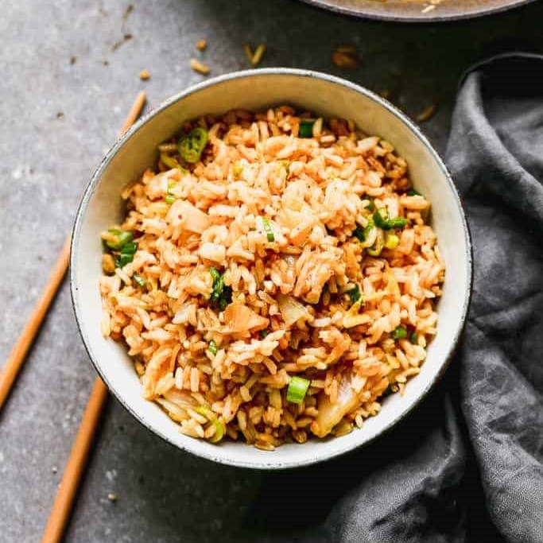

Kimchi Fried Rice

Description
Fresh, bold, and flavorful Kimchi Fried Rice is a quick and easy
Korean recipe that works as a side or main dish. Top it with
a
fried egg, serve it with chicken, or leave it as a healthy vegan
dish.
Ingredients
- 2 cups day-old cooked white rice (rice that has been cooked
and cooled in the fridge for at least an hour or overnight)
- 1 1/2 Tablespoons oil (vegetable or canola)
- 1/2 cup chopped onion
- 2 cloves garlic , minced
- 1/2 cup Kimchi , chopped + 1 tablespoon kimchi juice
- 1-2 Tablespoons low-sodium soy sauce , or more, to taste
- 1/4 teaspoon sesame oil
- salt and freshly ground black pepper , to taste
- 2 green onions , chopped
- Sriracha hot sauce , for garnish
Steps
- Add oil to a wok or large fry pan over medium-high heat.
Once hot, add onion and cook for 2 minutes. Add garlic and
saute for 30 seconds.
- Add chopped kimchi and toss for 1 minute. Separate the cold,
cooked rice kernels with your fingers and add to the pan.
Toss gently to combine.
- Add the soy sauce, sesame oil, black pepper, and 1 chopped
green onion. Toss gently to combine (you don't want to
over-stir the rice and make it mushy).
- Taste and add pepper, salt or more soy sauce, as needed.
- Serve immediately garnished with additional green onion and
sriracha hot sauce. Kimchi fried rice is a great accompaniment
to Pork Buglogi!)
Recipe Credit
Homepage